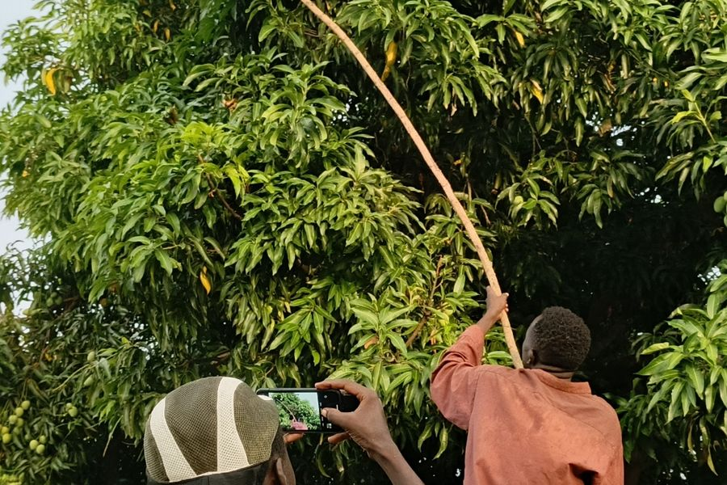

Agronomist, farm manager, scout
A day to set up, then daily use
6 steps, in order
A screen recording of the whole process, start to finish, in the real product.
Step by step
A wrong phone number cannot be corrected. The sign-in name is set once, at creation. Delete the scout and enrol them again.
Clips
Beside the full walkthrough, each step gets its own short recording, so you can jump straight to the part you need.
Support
Three channels beside the documentation. All three pages are placeholders for now and will be designed next.